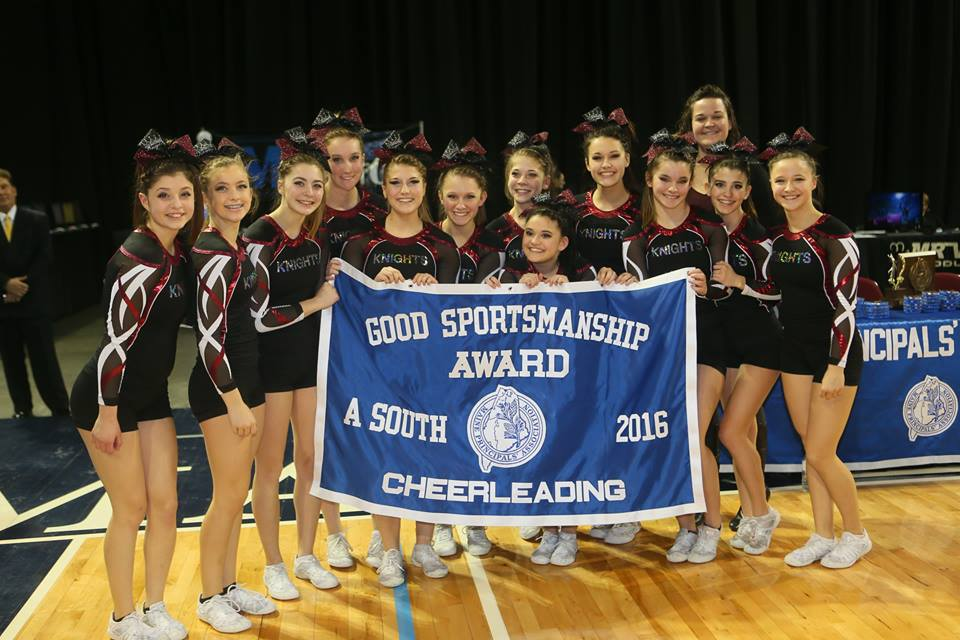
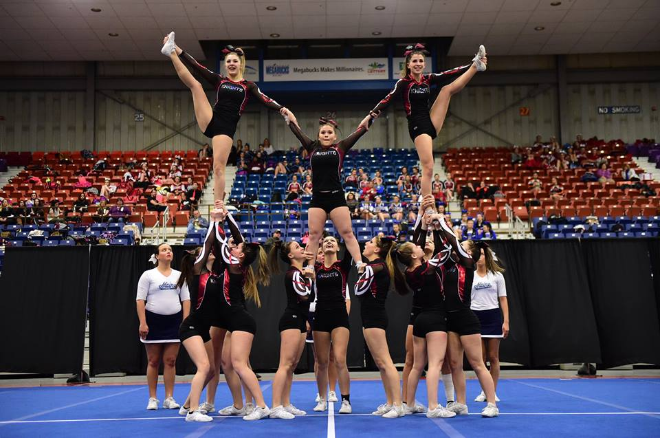
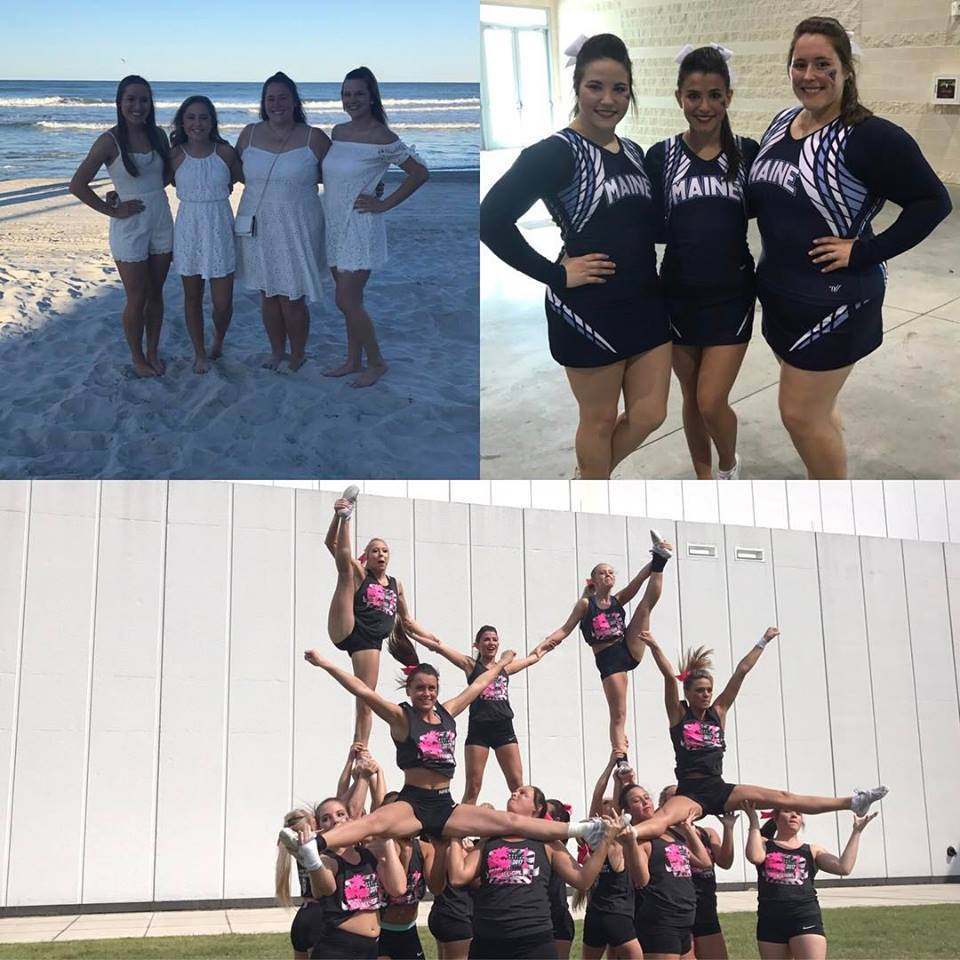
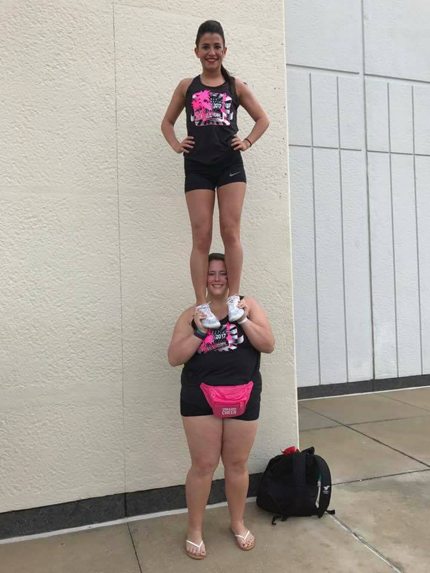

The Reason I Started Cheering:
I started cheering unexpectedly in the fifth grade. I started with my childhood bestfriend Kaylin teaching me all the cheers she learned at practice in her living room just for fun. Then, one day she asked my to come to her practice to watch, which I thought would be fun to see what cheering was all about and what she was doing at practice all the time. Until at the end of practice she called me over and told me to show her coach all of the cheers I learned, which I wasn't thrilled about because I thought I was just coming to practice to watch. Unwilling I did the cheers I had learned all those times with Kaylin and after thinking nothing of it. The coach later called Kaylin asking her if I wanted to be on their competition team that was coming up, and that I had already made the team and it was Kaylin's job to convince me to join the team. I was so excited when I heard the news and decided to join the team and I have been cheering ever since. My cheering career continued on to college where I now cheer for the Univerity of Maine basketball and football team, and compete at the Nationals competition in Daytona, Florida every season.
High School:
 College:
 Lessons Learned:
Through this experience I learned to never be afraid of trying something new, the worst thing that could happen is that you realized you don't enjoy it and you try something else. I was lucky enough to find something I love doing and I'm thankful for that moment in fifth grade. Cheering has brought me lifelong friends and experiences that I get to remeber for the rest of my life and it's still continuing. Through cheering I gained leadership skills from being the cheering captain in highschool and leading the team to a sportmanship award and a regionals title my senior year. I was able to take these skills with me to college cheering.Follow Our Journey to Daytona!
UMaine Cheering Instagram